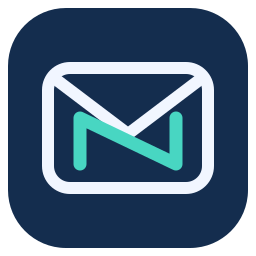

NEXOMAIL · PROYECTO DE TESIS
Una conexión. Todo tu correo.
Configura los identificadores públicos de las aplicaciones. La clave de Gemini u Ollama se configura únicamente en el servidor local.
Direcciones de retorno OAuth
Registra exactamente estas direcciones en las aplicaciones correspondientes:
Corregir el error redirect_uri de Microsoft
Microsoft debe tener registrada exactamente esta dirección de retorno. Un cambio local no modifica el registro de Microsoft.
- Abre Microsoft Entra → Registros de aplicaciones.
- Selecciona la aplicación con este ID de cliente:
- En Autenticación, añade la dirección anterior en Aplicación de página única (SPA) y guarda.
- Cierra la ventana del error y vuelve a pulsar Conectar Outlook.
La extensión no utiliza un secreto de cliente para este acceso.
El ID de extensión puede cambiar entre navegadores y al reinstalarla. Si cambia, vuelve a registrar las direcciones mostradas.
Después de guardar, cierra y abre el panel. Cada plataforma solicita su autorización. NexoMail comprueba la cuenta detectada en la página antes de acceder al correo.
Acceso para otros usuarios
Estas opciones preparan la extensión. No publican la aplicación ni verifican sus permisos en Google o Microsoft.
Outlook · cuentas personales e institucionales
- En Microsoft Entra, abre esta aplicación en Registros de aplicaciones.
- En Tipos de cuenta admitidos, selecciona Cuentas en cualquier directorio organizativo y cuentas personales de Microsoft.
- En Autenticación, registra la dirección Microsoft anterior como SPA y guarda.
- En esta extensión, conserva Personales y cualquier organización.
Una institución puede exigir aprobación de su administrador.
Gmail · salir de la lista de usuarios de prueba
- En Google Auth Platform, configura el público como Externo.
- Prepara la publicación en producción y completa la verificación que Google exija para los permisos de Gmail utilizados.
- Conserva el Client ID y la dirección de retorno registrados para la versión distribuida de NexoMail.
La revisión de Google no se completa con un cambio en el código. Mientras la aplicación esté en pruebas, solo podrán entrar sus usuarios de prueba.
Gemini es independiente del inicio de sesión
La clave de Gemini pertenece al servidor de IA. Cada usuario autoriza su propio correo mediante Google o Microsoft; no necesita configurar Gemini para iniciar sesión.
Esta instalación utiliza un servidor local. Para distribuirla a otras personas, cada instalación necesita un servidor configurado o un servicio alojado preparado para varios usuarios.